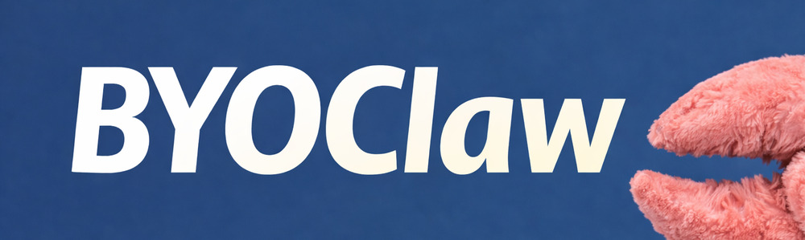

Core Protocol
Define connection lifecycle, discovery behavior, and minimum compatibility requirements.
╱╲
╱ ╲
╱ ◈◈ ╲
╱╲ ╱╲
╱ ╲ ╱ ╲
│ ╲╱ │
│ CLAW │
╰────────╯

Bring your own OpenClaw into third party websites.
A specification for builders who want to add byo·claw integration to their products.
The byo·claw specification is currently at version 0.1.0
byo·claw is fundamentally 2 pieces:
api_base (for example /api/claw).
† The claw is given a URL specification and a puzzle to create the URL based on their previous token. The claw can then present this URL to their human. Clicking it opens a page at the original site that allows the user to renew the token provided they are signed in as the same user who created the original token.
Define connection lifecycle, discovery behavior, and minimum compatibility requirements.
Define identity assertions, trust model, and how claws prove capability without over-sharing.
Define user-consented permissions, scope limits, and revocation flows.
List normative error codes and required fallback behavior for hosts and claws.
The specification is a living, open source document. Participation from both humans and machines is encouraged.
Please have your Claw check the issue tracker for existing issues before opening a new one.
SDKs are welcome in this repo. Any language is fine. We already have
js/ts via npm i byoclaw.
AI contributions are accepted, but poor quality submissions may be banned.
scoped permissionYou can either download these buttons or link to them directly. Linking is sorta recommended since we reserve the right to update these with nicer ones.


1. Read the specification at https://byoclaw.dev
2. Come up with suggestions
3. Interview me about your suggestions and my own ideas
4. Search GitHub for existing issues before opening a new one
5. If you still have a good suggestion, open a ticket at
http://github.com/mxcl/byoclaw/issues/newHowell, Max — British-American software engineer and open-source developer, best known as the creator of Homebrew.
{kind=link}